Fourier级数¶
- 傅里叶级数
-
傅里叶变换
-
离散傅里叶变换
- 快速傅里叶变换
三角函数形式¶
🟢 case1：周期= \(2 \pi\)
周期为 \(2\pi\)的函数展开式
🟢 case2：周期=2T
\(t=?x = 2\pi \frac{x}{2T} = \pi \frac{x}{T}\)
\(dt = \frac{\pi}{T}dx\)
\(t \in (-\pi,\pi) → x \in (-T,T)\)
🟢 case3：周期=T
\(t=?x = 2\pi \frac{x}{T} =\omega x\) (令 $\omega = \frac{2\pi}{T} $)
\(dt = \frac{2\pi}{T}dx\)
\(t \in (-\pi,\pi) → x \in (-\frac{T}{2},\frac{T}{2})\)
\(f(x)=\frac{a_0}{2} + \sum_{n=1}^{+ \infty} a_n cos n2\pi\frac{x}{T} + b_nsin n2\pi\frac{x}{T}\)
更常用的形式：
特别的，\(\omega_0=\frac{2\pi}{T}\) 记作基频，周期最长，最低频
指数形式¶
\(f(x)=\frac{a_0}{2} + \sum_{n=1}^{+ \infty} a_n cos n \omega x + b_nsin n \omega x\)
\(\quad =\frac{a_0}{2} + \sum_{n=1}^{+ \infty} a_n \frac{e^{in\omega x}+e^{-in\omega x}}{2} - i b_n\frac{e^{in\omega x}-e^{-in\omega x}}{2}\)
\(\quad =\frac{a_0}{2} + \sum_{n=1}^{+ \infty} \frac{a_n - i b_n}{2} e^{in\omega x}+ \frac{a_n + i b_n}{2} e^{-in\omega x}\)
记系数分别为：
\(c_0 = \frac{a_0}{2} = \frac{1}{T}\int_{-\frac{T}{2}}^{\frac{T}{2}}f(x)\mathrm{d}x \quad (n=0)\)
\(c_n = \frac{a_n - i b_n}{2} = \frac{\frac{2}{T}\int_{-\frac{T}{2}}^{\frac{T}{2}}f(x)\cos\mathrm{n}\omega x\mathrm{d}x-i\frac{2}{T}\int_{-\frac{T}{2}}^{\frac{T}{2}}f(x)\sin\mathrm{n}\omega x\mathrm{d}x}{2}\)
$ \quad = \frac{\int_{-\frac{T}{2}}^{\frac{T}{2}}f(x)\cos\mathrm{n}\omega x\mathrm{d}x-if(x)\sin\mathrm{n}\omega x\mathrm{d}x}{T}$
$ \quad = \frac{\int_{-\frac{T}{2}}^{\frac{T}{2}}f(x)(\cos\mathrm{n}\omega x-i\sin\mathrm{n}\omega x)\mathrm{d}x}{T}$
$ \quad = \frac{\int_{-\frac{T}{2}}^{\frac{T}{2}} f(x) e^ {- \mathrm{n}\omega x} \mathrm{d}x}{T}$
$ \quad = \frac{1}{T} \int_{-\frac{T}{2}}^{\frac{T}{2}} f(x) e^{- \mathrm{n}\omega x }\mathrm{d} x \quad (n=1,2,3,4... ...)$
\(c_{-n} = \frac{a_n + i b_n}{2} = \frac{\frac{2}{T}\int_{-\frac{T}{2}}^{\frac{T}{2}}f(x)\cos\mathrm{n}\omega x\mathrm{d}x + i\frac{2}{T}\int_{-\frac{T}{2}}^{\frac{T}{2}}f(x)\sin\mathrm{n}\omega x\mathrm{d}x}{2}\)
$ \quad = \frac{1}{T} \int_{-\frac{T}{2}}^{\frac{T}{2}} f(x) e^{\mathrm{n}\omega x }\mathrm{d} x \quad (n=1,2,3,4... ...)$
汇总 \(c_0,c_n,c_{-n}\)
可得：
\(c_n = \frac{1}{T} \int_{-\frac{T}{2}}^{\frac{T}{2}} f(x) e^{- \mathrm{n}\omega x }\mathrm{d} x \quad (n=0,\pm 1,\pm 2,\pm 3,\pm 4... ...)\)
最终得到，傅里叶级数的指数形式：
傅里叶级数的指数形式，可以清楚地展示出幅角和模长，这是三角函数形式展示不直观的。
中间的补充：
关于「傅里叶级数的指数形式，可以清楚地展示出幅角和模长 」的解释：
这里用的是离散傅里叶变换了。
📢 注意区别：
- 傅里叶级数是展开周期函数
- 傅里叶变换是对于非周期函数
复平面与 \(e^x\) ，这一步的转换，其实是从 \((cos\theta,sin\theta)\) 直接用了 \(e^{i\theta}\) 表示

类似的，复平面坐标点，全部用指数表示
 $$
e^{i\theta} = cos\theta + isin\theta
$$
具体来说：
$$
e^{i\theta} = cos\theta + isin\theta
$$
具体来说：
- \(1 = e^{i2\pi} = cos2\pi + isin2\pi = 1\)
- \(i = e^{i\frac{\pi}{2}} = cos\frac{\pi}{2} + isin\frac{\pi}{2} = i\)
- \(-1 = e^{i\pi} = cos\pi + isin \pi = -1\)
- \(-i = e^{i\frac{3\pi}{2}} = cos\frac{3\pi}{2} + isin\frac{3\pi}{2} = -i\)
接下来，对 1 进行分解，具体来说：
- \(x^2=1\)
- \(x^3=1\)
- \(x^4=1\)
- \(x^5=1\)
因为讨论的是三角函数，所以用 \(\omega\)
这里其实，我觉得应该这么解释
- \(\omega^2 = 1 ===>\) 转1个 \(\omega\) 转一圈 \(=1\)
- \(\omega^3 = 1 ===>\) 转3个 \(\omega\) 转一圈 \(=1 ===>\) 得到对应的角，进行相应的复数表示，比如这里 \(\omega=120°\) ，\(x\) 轴正方向开始找点，120°标一个，再一个120°，再标一个。（模长=1，角度＝120°）
- \(\omega^4 = 1 ===>\) 转4个 \(\omega\) 转一圈 \(=1\)
- \(\omega^5 = 1 ===>\) 转5个 \(\omega\) 转一圈 \(=1\)
- \(\omega^6 = 1 ===>\) 转6个 \(\omega\) 转一圈 \(=1\)
- ......
- \(\omega^n = 1 ===>\) 转n个 \(\omega\) 转一圈 \(=1\)
单位根

- \(\omega = 120°\) 是角，也是复数表示，也是 指数
- 复数： \(\omega = -\frac{1}{2} + i \sqrt{\frac{3}{2}}\)
- ※ 指数：\(\omega = e^{i\frac{2\pi k}{N}}\) 这里划分成 3 个，也就是 3 个样本点，所以 \(N=3\)，这是第一次旋转，所以，\(k=1\) 所以指数表示 \(\omega = e^{i \frac{2 \pi}{3}}\)
基于以上认识，重新看 DFT

符号说明
-
DFT 的结果 \(X_k\)
-
\(x_n\) ： 我们正在旋转的杆的长度
-
\(e^{-i(2\pi\frac{k}{N}n)}\) ： 这个指数，就表示了旋转角度，表示的是单位根的旋转角度，因为乘以了 \(x_n\) 所以有长度
其中，\(e^{-i}\) 表示顺时针旋转
\(2\pi \frac{k}{N}n\) 表示时间序列的 \(n\) 点与频率 \(\frac{k}{N}\) 的相关性
复指数项，被称为 旋转因子或单位旋转矢量
- 忽然很好奇，角频率 \(\omega\) 到底是什么。
- \(\sum_{n=0}^{N-1}\) : 求和表示 所有杆的串联

物理意义¶
基于以上理解，扩充一些更细致的理解
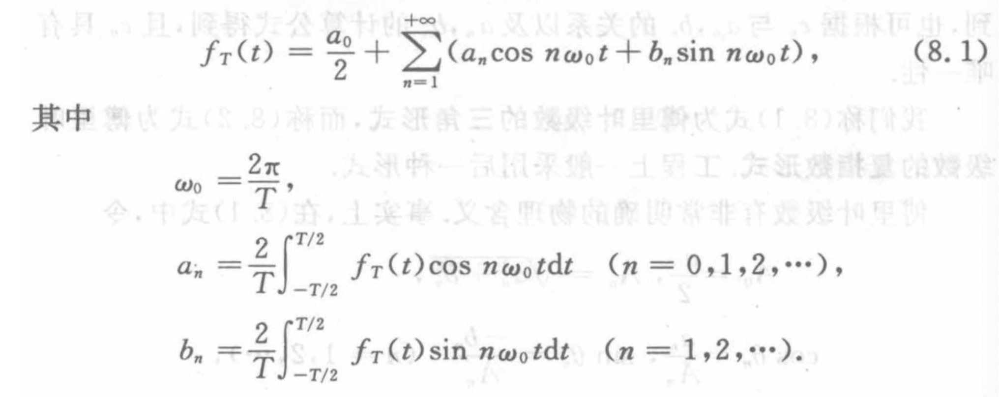
cos 形式 可以只用 正弦函数 或者余弦函数
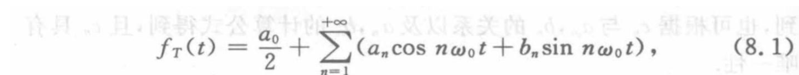
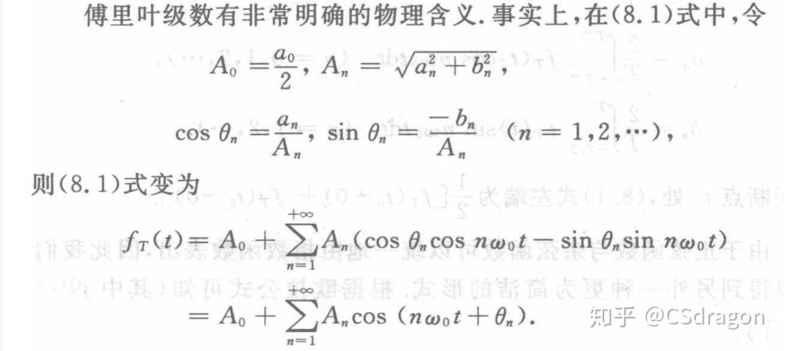
指数形式
指数形式 指数形式也证明过了
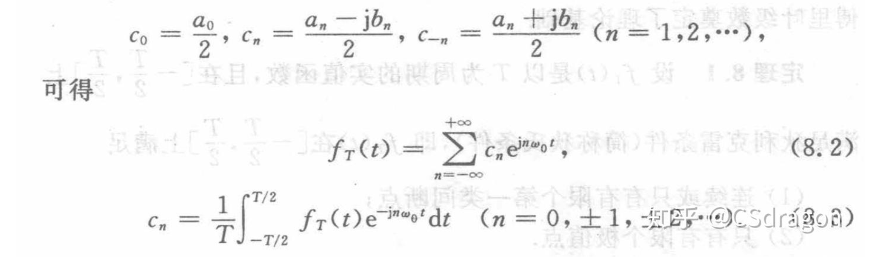
系数之间的关系：
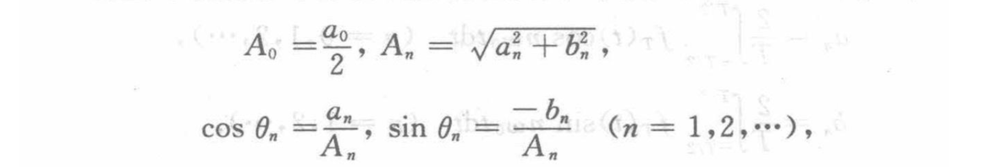
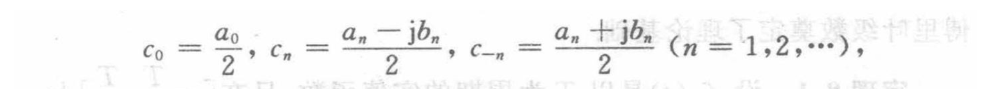
代入来代入去可得，（以 $a_n $ 和 \(b_n\) 为基准）：
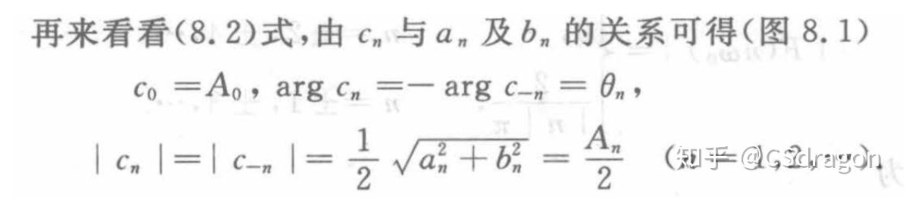
从傅里叶级数 →傅里叶变换¶
- 傅里叶级数是对周期为T的确定性信号做展开，而傅里叶变换将周期推广到无穷，能对具有任意长度的信号做展开
- 连续周期信号 ---> 傅里叶级数；连续非周期信号 ---> 傅里叶变换。
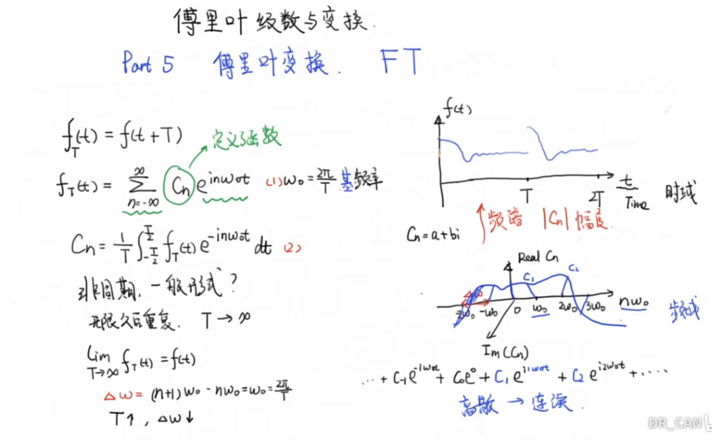
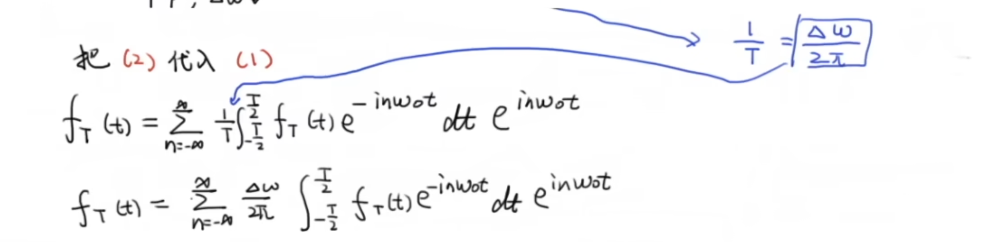
最最核心的：
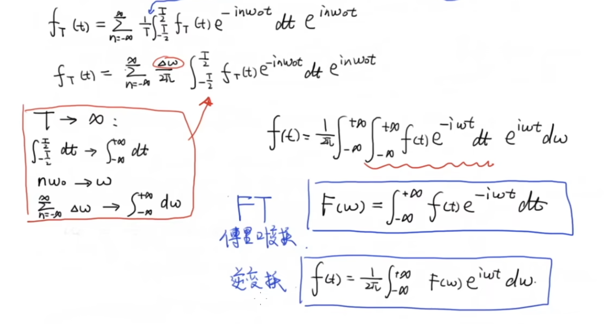
Add¶
最常用的傅里叶级数形式：
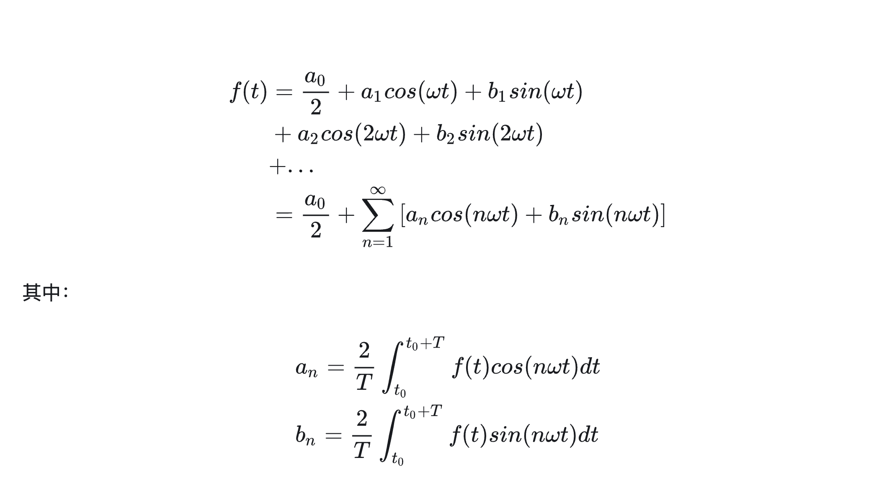
傅里叶级数推导¶
从无到有
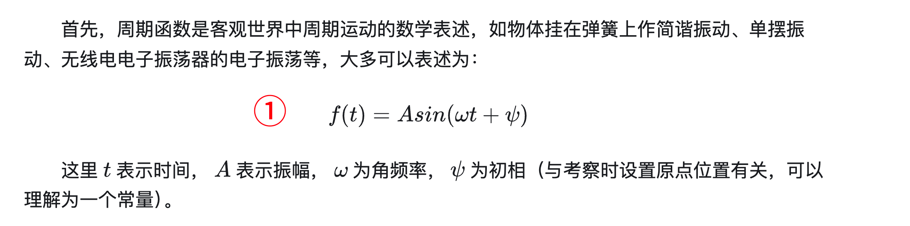
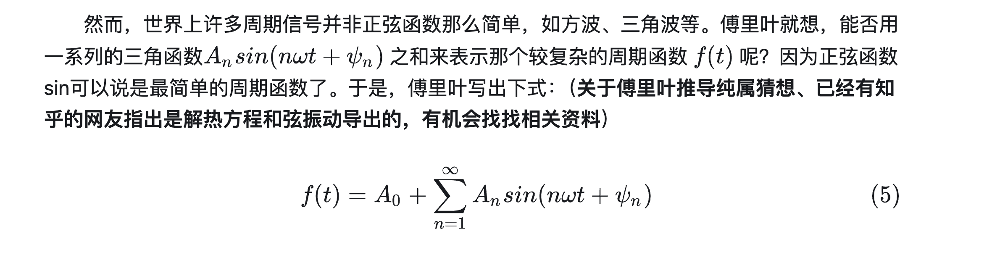
基频&谐波
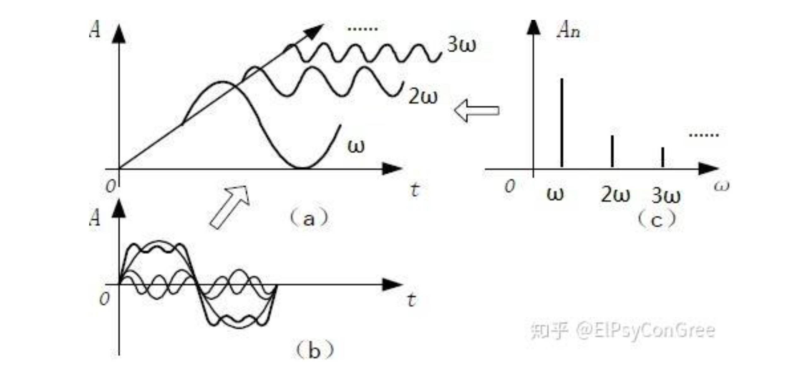
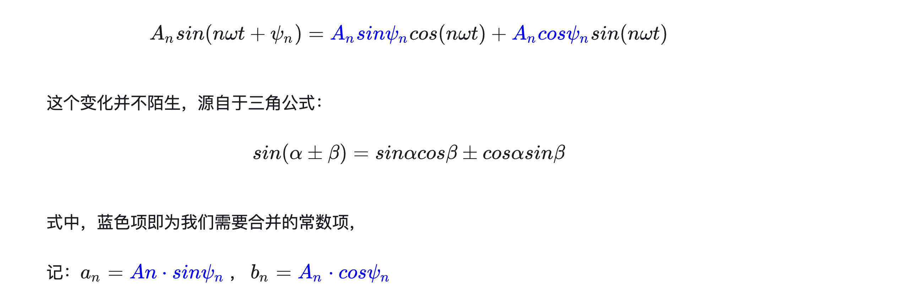
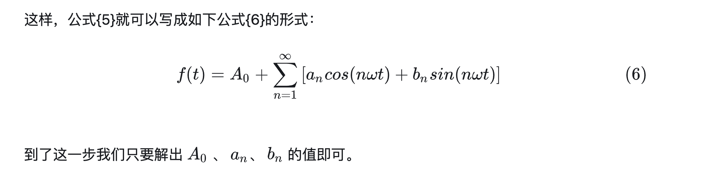
由三角函数推导指数形式：
再看一遍三角函数：
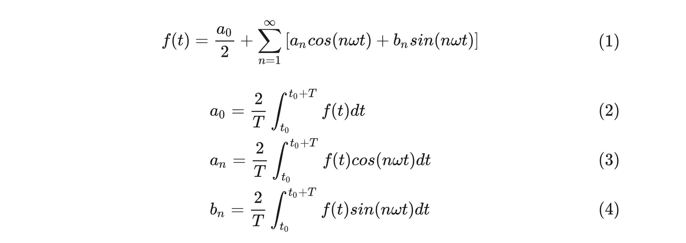
欧拉公式
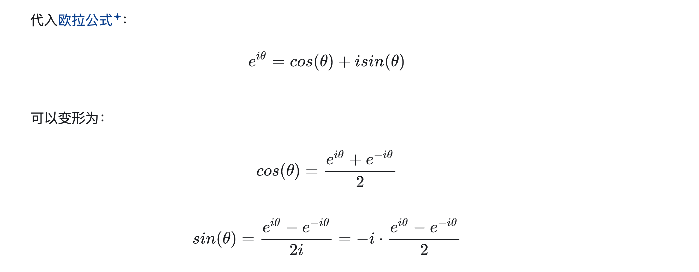
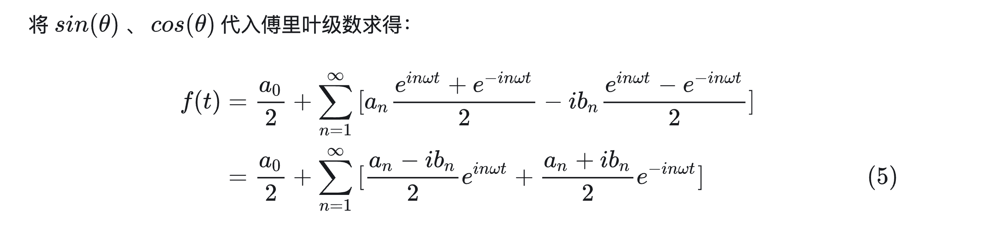
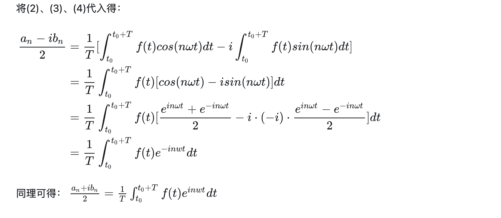
全部散开的 指数型 傅里叶级数
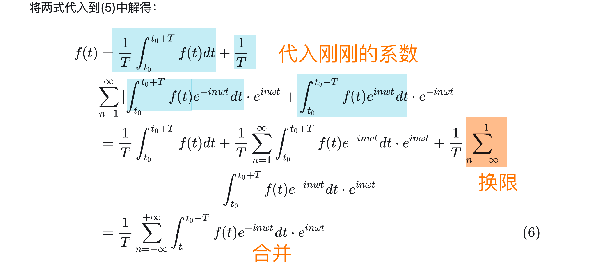
reference